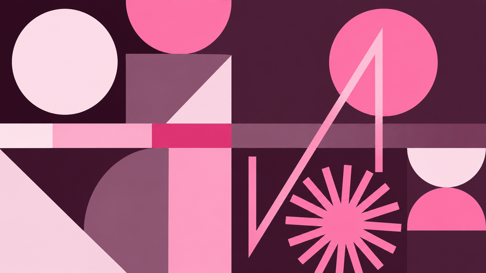

I did not enter law school with a built-in roadmap or a family of attorneys. I came in as a first-generation student, learning the language, the expectations, and the unspoken rules of the profession in real time; often, through trial and error.

3.9
Cumulative GPA
UB School of Law
Top 5%
Class Rank
UB School of Law
4.0
Cumulative GPA
Rochester Institute of Technology
Top 1%
University Ranking
Rochester Institute of Technology
About The Pinkprint Lawyer
The Pinkprint Lawyer began with a straightforward realization: too many law students are expected to simply “figure it out.” I did not enter law school with a built-in roadmap or a family of attorneys. I came in as a first-generation student, learning the language, the expectations, and the unspoken rules of the profession in real time; often, through trial and error. What I quickly recognized was that intelligence and work ethic were not the issue. Access to clear, honest guidance was.
My path through law school was defined by preparation, discipline, and a deep commitment to excellence. I graduated in the top five percent of my class at the University at Buffalo School of Law with a cumulative 3.9 GPA, earning induction into the Order of the Coif and receiving multiple academic and service-based awards, including the Max Koren Award, the Monique E. Emdin Award, the Promise Prize Scholar Award from the Change Create Transform Foundation, and the John L. Hargrave Award from the Minority Bar Foundation.
I served as the inaugural Diversity, Equity, and Inclusion Editor of the Buffalo Law Review, a role I helped create to promote inclusivity within the journal, and founded the First-Generation Law Students Association, providing structure and community for students navigating law school without a traditional roadmap.
Alongside my legal training, I spent years immersed in research, writing, and teaching-oriented roles. I served as a Faculty Research Scholar under Professor Guyora Binder, a Writing Fellow under Professor Kate Rowan, and held faculty assistantships with Professor Matthew Steilen, Professor Rebecca French, and Dean Gargano. My research contributions have been recognized in publications at the Columbia Law Review, Harvard Law & Policy Review, Emory Law Journal, and in a leading criminal law casebook. I also co-authored a peer-reviewed article in the Criminal Justice Review, and my scholarly work has been featured through RIT and UB Law.
I also participated in the Criminal Justice Advocacy Clinic at the University at Buffalo School of Law, which allowed me to connect with real clients in a meaningful way and deepened my understanding of the human impact of legal work.
Before law school, I completed a Master of Science in Criminal Justice and a Bachelor of Science in Criminal Justice and Communication at the Rochester Institute of Technology, graduating with a cumulative 4.0 GPA and ranking in the top 1% of the entire university. During my studies, I received multiple academic honors, including the RIT Outstanding Undergraduate Scholar Award, the Thomas C. Castellano Award, the Richard B. Lewis Award, the Kearse Undergraduate Writing Award, the Shaw & McKay Award, and the Center for Public Safety Initiatives’ Excellence in Research Award. I was selected as the College of Liberal Arts 2018 Undergraduate Commencement Speaker and participated in the McNair Scholars Program, the RIT Honors Program, and the Higher Education Opportunity Program (HEOP). I also contributed to a nationally funded body-worn camera research project through the Bureau of Justice Assistance.
Today, I practice law in real estate, immigration law, business law, and family law, and serve as the New York City Partner and Co-Owner of Smith & Singleton Law, a Black-owned law firm grounded in excellence, equity, and intentional advocacy. The firm officially launched on May 17, 2026, intentionally marking the 72nd anniversary of the Supreme Court’s decision in Brown v. Board of Education; a moment that continues to shape how we think about access, opportunity, and the law’s role in social change.
My experience across private practice at Fried, Frank, Harris, Shriver & Jacobson LLP, the United States Attorney’s Office, the United States Court of Appeals for the Third Circuit—the second highest court in the United States—and academic institutions has given me a clear understanding of how legal careers are built. Not just on paper, but in real life.
I have seen what works, what is often left unsaid, and where students are most likely to feel unsure or unsupported.
The Pinkprint Lawyer exists for students who want to approach this journey with confidence rather than confusion. It is for those who want to understand the why behind each step, not just the steps themselves. And it is for anyone who has ever thought, “I wish someone had explained this sooner.”
Here, I share the guidance I once needed: clearly, honestly, and without gatekeeping.
My Mission
Not fear, confusion, or unnecessary pressure.
Too often, legal education operates on silence and assumption. Students are expected to already know the rules, the language, and the strategy, even when no one has taken the time to explain them. That gap does not reflect a lack of ability; it reflects a lack of access.
The Pinkprint Lawyer exists to close that gap.
At the core of everything I create is a belief that preparation builds confidence. When students understand how the system works (academically, professionally, and culturally), they show up differently. They ask better questions. They make more informed decisions. They stop second-guessing whether they belong.
I am deeply committed to empowerment without gatekeeping. That means sharing information clearly, explaining the “why” behind the advice, and respecting the fact that every student’s path looks different. There is no single way to succeed in law, but there are ways to move through it more intentionally.
The Pinkprint Lawyer is here to offer structure where there is overwhelm, reassurance where there is doubt, and guidance that is both honest and practical. My goal is not only to help students succeed in law school, but to help them build careers they feel confident standing behind.
“This work isn’t just about surviving the process, but rather, about understanding it and moving through it with purpose.”
Start Here
This page is designed to help you orient quickly, based on where you are right now. No scrolling for hours, no guessing which pinkprint fits your situation. Just a clear path forward.
If you are still planning, applying, or preparing for your first semester, this path is for you. You will find resources that help you understand what matters early, so you can start strong and avoid common missteps that cost students time, confidence, and opportunities.
If you are in the middle of the experience (juggling classes, outlining, exams, internships, and everything that comes with being a law student), this path is for you. The goal here is simple: help you build systems that reduce overwhelm and strengthen performance.
If you are stepping into the next chapter (bar prep, job searching, or your first role in the profession), this path is for you. Transition seasons can feel unclear, even when you have done everything “right.” This section helps you approach what comes next with direction and confidence.
Wherever you are in the journey, the goal is the same:
Less confusion, and more clarity. A plan you can actually follow!
Start HereContact
I am always open to thoughtful conversation and meaningful opportunities — questions, collaborations, speaking engagements, or media inquiries. Reach out and I will do my best to respond with clarity and intention.
Contact MeThe Pinkprint Lawyer is an educational platform. Nothing on this site constitutes legal advice, nor does any content create an attorney–client relationship.